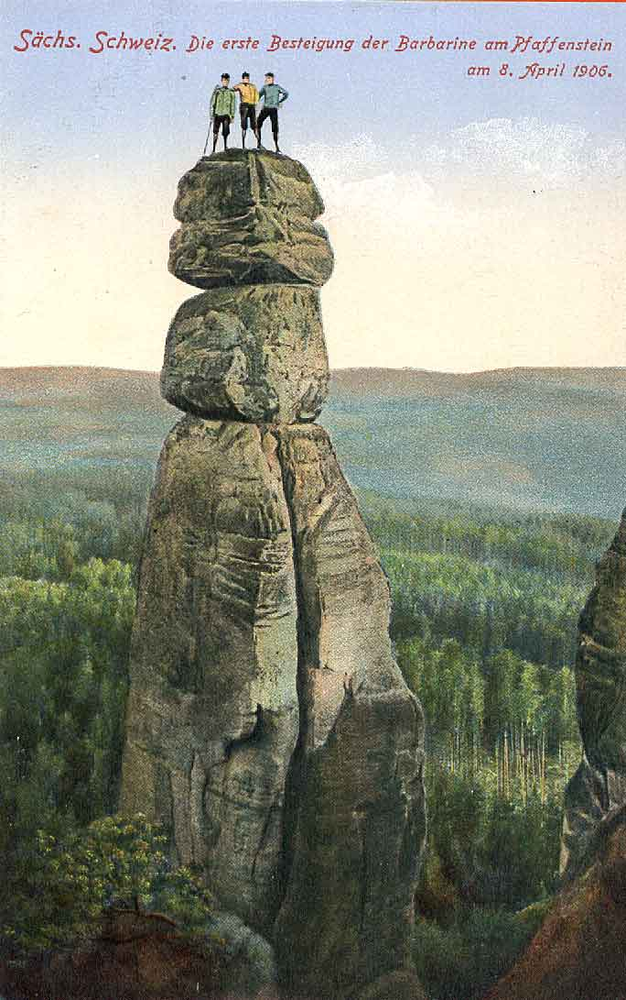
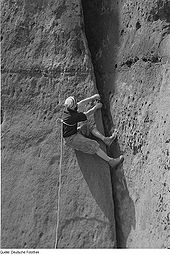
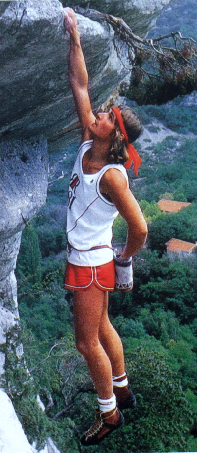
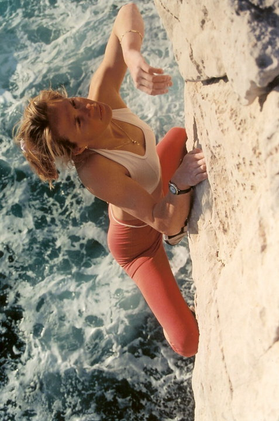
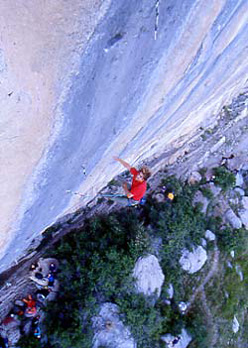

1890 - 1949: des débuts européens
À l'origine, l'escalade est une activité pratiquée par les alpinistes lors de leurs ascensions en montagne mais, avec l'augmentation de la difficulté des voies d'alpinisme, ils commencent à la considérer comme un moyen d'entraînement. Ils se mettent alors à pratiquer l'escalade lors de sorties organisées par les premiers clubs alpins et escaladent les parois du Salève en Haute-Savoie, les blocs de Fontainebleau et les falaises de Lake District en Angleterre et de Dresde en Allemagne orientale dès la fin du XIXe siècle.
Au début du xxe siècle, l'escalade se développe et de nombreux clubs alpins voient le jour, notamment en Allemagne, en France, en Italie, en Angleterre et aux États-Unis. Le niveau des grimpeurs progresse vite malgré le matériel encore très rudimentaire et les premières voies dans le 5e degré de cotation sont ouvertes. En 1903, Siegfried Herford (en) réalise l'ascension de Botterill’s Slab (5) au Scafell en Angleterre et Oliver Perry-Smith celle de Lokomotive Esse (4+/5) à Dresde en Allemagne. Ces deux voies atteignent alors la limite du système de cotation utilisé à l'époque, créé par Hans Dülfer. Deux ans plus tard, Perry-Smith élève le niveau de difficulté avec la réalisation de Teufelsturm et de Spannagelturm Perrykante. Ces voies seront classées par la suite dans le 6e degré, lors de la mise en place du système de cotation proposé par Willo Welzenbach en 1925.
À cette époque, ce niveau est considéré comme la limite des possibilités humaines dans le domaine de l'escalade7. Pendant des années, l'escalade est pratiquée de manière très différente selon les pays. Les clubs alpins se réunissent alors à Chamonix en 1932 et fondent l'Union internationale des associations d'alpinisme (UIAA) afin de coordonner les actions des différents clubs et de gérer les problèmes inhérents au milieu de l'escalade. Durant le xxe siècle, l'escalade progresse au rythme de l'évolution du matériel et des performances des grimpeurs, et des voies d'escalade de difficultés croissantes sont ouvertes au fil des années.
1950 - 1978 : l'hégémonie américaine
Dès la fin des années 1950, l'escalade connaît un vif succès, notamment aux États-Unis, et de nombreuses salles d'escalade sont ouvertes. De plus, l'apparition de nouveaux matériels, comme les pitons à expansion, permet de pratiquer l'escalade dans des endroits réputés inaccessibles. La première voie américaine dans le 6e degré est ouverte en 1957 par Royal Robbins, Mike Sherrick et Jerry Gallwas, en réussissant l'ascension de la face nord-ouest du Half Dome dans le Parc national de Yosemite. Cette réalisation est la première d'une longue série de réussites américaines au parc du Yosemite, mais aussi en Europe. En 1962, Gary Hemming, Royal Robbins et trois de leurs compatriotes ouvrent La directe américaine aux Drus, puis en 1965, la directissime toujours aux Drus. Ils ouvrent aussi de nombreux itinéraires sur El Capitan comme Salathe Wall, (1961) North American Wall (1964) ou encore Mescalito (1974), qui sont encore aujourd'hui des références de l'escalade artificielle. Parallèlement, l'escalade libre se développe peu à peu, en suivant le concept éthique consistant à ne pas détériorer les voies et à réussir les ascensions sans aide.
Forts de leur expérience sur les parois du Yosemite, les Américains font rapidement progresser l'escalade et de nouveaux degrés de cotation sont ouverts. En 1970, Ron Kauk réalise l'ascension de Astroman (7a/5.11c), la première voie dans le 7e degré7, puis en 1972, John Bragg réussit le dévers de Kansas City le premier 7b et finalement en 1974, Steve Wunsch qui réussit Supercrack, le premier 7c. La France rattrape son retard avec notamment Jean-Claude Droyer qui ouvre les premiers 6b en 1976 puis les premiers 6c et 7a en 1977, et surtout Patrick Berhault et Patrick Edlinger qui, dès la fin des années 1970, réalisent un grand nombre de premières au Verdon et à Buoux, ainsi que plusieurs ascensions en solo intégral.


1979 - 1991 : la démocratisation de l'escalade
En 1979, Toni Yaniro, un jeune grimpeur de 18 ans, ouvre le 8e degré en réalisant Grand Illusion (8a/5.13b). Cependant, cette ascension ne fait pas l'unanimité dans le milieu de la grimpe compte tenu de la méthode employée alors par Toni : à chaque essai, il laisse la corde mousquetonnée réalisant ainsi de nombreux essais en moulinette. Cette pratique, qui est courante de nos jours, n'était pas répandue à cette époque, les grimpeurs ayant une approche très éthique de l'escalade. Trois ans plus tard, en 1982, le reportage de Jean-Paul Janssen, La vie au bout des doigts, est diffusé dans l'émission « Les carnets de l'aventure » sur Antenne 2 (devenue France 2). Le documentaire qui traite de la passion de Patrick Edlinger pour l'escalade et le solo intégral remporte un franc succès tant en France que dans le reste du monde, allant jusqu'à être nominé aux Oscars, et fait connaître la discipline au grand public. Forte de cette reconnaissance mondiale, l'escalade se développe alors de plus en plus, marquée par l'apparition des spits et plaquettes qui permettent d'accroître la sécurité lors des ascensions en laissant le grimpeur se concentrer davantage sur la technicité et la difficulté des voies. De plus, de nombreuses salles d'escalade sont ouvertes dans les villes et des techniques d'entraînement scientifiques sont mises au point par Edlinger et Alain Ferrand. Cependant, le monde de l'escalade reste majoritairement représenté par les hommes, hormis quelques rares exceptions comme Catherine Destivelle qui réalise le premier 8a féminin en 1986.
Durant les années 1980, la cotation explose rapidement, notamment avec Wolfgang Güllich, un jeune grimpeur allemand. Ayant réussi en 1982 la première répétition de Grand Illusion, la voie cotée 8a ouverte par Yaniro, Wolfgang élève encore le niveau en 1984 et réalise la première ascension de Kanal Im Rücken à Altmühtal qui devient le premier 8b au monde. En 1985, il réussit le premier 8b+, Punks in The Gym, puis en 1987 le premier 8c avec Wallstreet. Mais c'est l'Anglais Ben Moon qui réalise la première voie cotée 8c+ en 1990 avec l'ascension de Hubble à Raven Tor au Royaume-Uni. Finalement en 1991, après un long entraînement spécifique, Wolfgang Güllich fait l'ascension d'Action directe et évalue sa cotation à 8c+/9a. Cependant, de nombreux répétiteurs finiront par lui attribuer une cotation de 9a, en faisant ainsi de cette voie le premier 9e degré7, qui est actuellement le plus haut degré de difficulté en escalade.
1992 - 2000: l'escalade au féminin et le bloc
Durant les années 1990, l'augmentation de la cotation marque un temps d'arrêt et le monde de l'escalade voit surtout de nombreux grimpeurs répéter les différentes voies ouvertes les années précédentes. La seule exception étant Akira, une voie particulièrement difficile réalisée par Fred Rouhling en 1995 et qu'il évalue à 9b. Cependant, cette ascension a toujours été remise en question par le milieu de l'escalade, principalement en raison du manque de preuve et cela même si personne n'a été en mesure de la répéter. Parallèlement, à cette augmentation accélérée de la cotation et à l'ouverture de quantité de nouvelles voies d'escalade de tous niveaux, une nouvelle discipline commence à se développer : le bloc. Proposant une escalade plus courte mais plus technique et difficile, le bloc permet de travailler certains enchaînements de mouvements sans la contrainte du matériel ni l'obligation d'escalader plusieurs mètres de parois avant d'arriver au passage difficile de la voie (crux). Certains grimpeurs comme Fred Nicole y consacrent d'ailleurs une grande partie de leur temps, et le niveau ne tarde pas à augmenter avec le développement de la discipline. Les sites de Fontainebleau, Hueco Tanks ou encore Cresciano, deviennent rapidement les sites incontournables de cette pratique qui voit un grand nombre d'ouverture de blocs cotés entre 7B et 8A. Mais c'est surtout vers le petit site d'escalade situé à Branson en Suisse que le monde se tourne. Une première fois en 1992, lorsque Fred Nicole réalise La danse des Balrogs, le premier bloc coté 8B au monde, puis une seconde fois en 1996 où il réussit Radja, le premier 8B+.
Les années 1990 sont aussi marquées par l'arrivée de femmes dans le haut niveau de l'escalade. La Française Isabelle Patissier réalise de nombreuses ascensions de haut niveau, notamment dans les gorges du Verdon et domine les compétitions avec l'Américaine Robyn Erbesfield. Mais c'est surtout Lynn Hill qui marquera l'escalade en 1993, en réussissant la première ascension en escalade libre de The Nose sur la paroi de El Capitan au Yosemite. Cette voie de 1 000 mètres qui compte 34 longueurs, n'avait alors jamais été réalisée dans ce type d'escalade, démontrant ainsi le potentiel féminin dans l'escalade. Cet exploit est suivi cinq ans plus tard par la première ascension féminine d'une voie cotée 8c, Onky Tonky, réalisée par Josune Bereziartu.En novembre 2000, la difficulté en bloc augmente une nouvelle fois avec l'ascension par Fred Nicole de Dreamtime à Cresciano en Suisse. Il évalue la cotation de ce bloc à 8C, ce qui déclenche rapidement une polémique, notamment sur le nombre de mouvements que requiert ce bloc.


2001 - 2013: la nouvelle génération
En 2001, c'est un jeune grimpeur américain qui fait parler de lui en élevant à nouveau le niveau de difficulté. Alors âgé de seulement 20 ans, Chris Sharma réussi la première ascension de Biographie, une voie cotée 9a+ qui avait été équipée en 1989 par Jean-Christophe Lafaille sur les falaises de Céüse en France. Les années suivantes seront notamment marquées par les nombreuses premières ascensions et répétitions de très haut niveau par une génération de grimpeurs ayant commencé l'escalade dès leur plus jeune âge. Certains se démarquant plus en bloc comme Paul Robinson ou Daniel Woods, d'autres en voies comme Chris Sharma et notamment Adam Ondra, qui, jusqu’en 2021, était le plus jeune grimpeur au monde à avoir atteint le neuvième degré à l'âge de 13 ans. À partir de 2008, de nouveaux niveaux de cotation sont atteints, notamment avec Chris Sharma et Adam Ondra qui ouvrent plusieurs voies cotées 9b puis 9b+ (Change, La Dura Dura).
Les années 2000 et 2010 sont aussi marquées par nombre de discussions et polémiques sur les cotations de voies et surtout de bloc au plus haut niveau. D'une part, parce que la cotation a augmenté très rapidement durant les vingt dernières années, et d'autre part parce que beaucoup de cotations sont revues à la baisse. Quelques grimpeurs comme Dave Graham, Nalle Hukkataival et Daniel Woods prennent même activement part aux discussions, tentant de redéfinir clairement les limites du très haut niveau.
Les femmes réalisent aussi des ascensions de très haut niveau, et après Josiane Bereziartu, qui est longtemps restée la seule femme à réussir l'ascension d'une voie dans le neuvième degré, Sasha DiGiulian, Charlotte Durif et Muriel Sarkany atteignent aussi ce niveau. En bloc, c'est la jeune grimpeuse Ashima Shiraishi qui, à l'âge de 11 ans, fait parler d'elle en réussissant l'ascension de Crown of Aragorn, un bloc coté 8B/V13, difficulté alors atteinte par seulement quelques femmes.